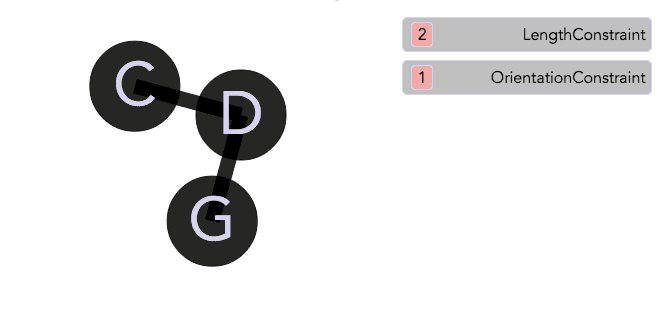
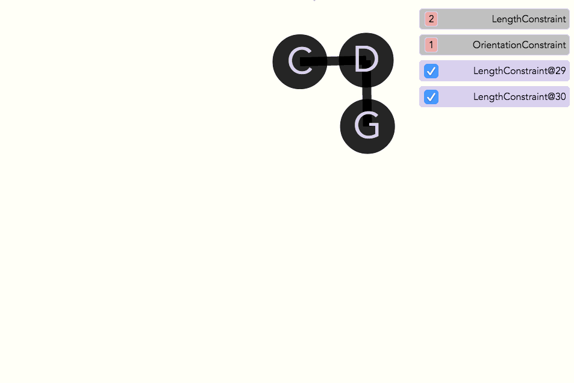
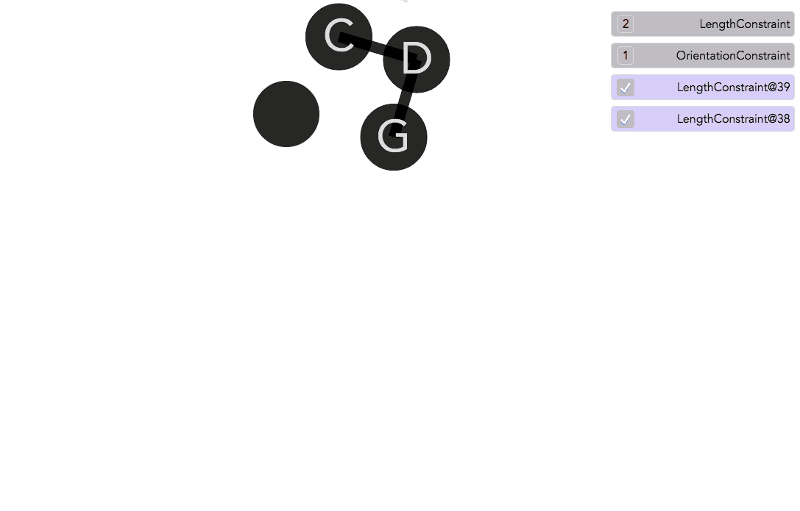
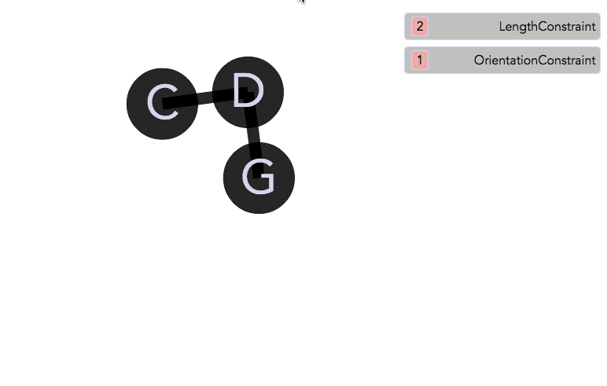
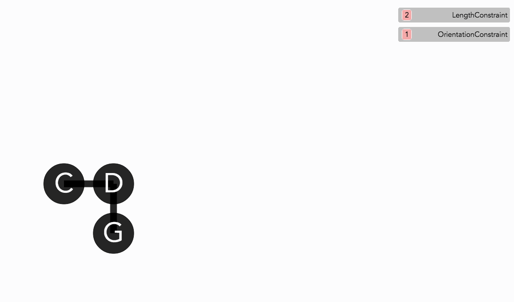

In the demo figure above we saw the a feature that helps understanding a program: the set of active constraints are shown at the top right of the screen. Notice that the one
Seeing the set of active constraints |
To quickly explore each constraint, we can click on the number of instances to get a list of individual constraints. Hovering over each individual constraint will highlight the objects involved in the constraint:
|  | Viewing involved objects in a constraint |
To explore each constraint in more detail, we can click on the individual constraint to get an inspector on it:
|  | Inspecting a constraint + constraint summary |
The inspector has several features. The properties belonging to the object (in this case the constraint) are listed. For those properties which are objects (in this case
Another feature is an English sentence summarizing the constraint. In the figure above it reads "points p1 & p2 always maintain a distance of 110." We'll get into how these are generated later.
Inspector can be used to modify the properties of the inspected object (here the constraint). For example, in the animated figure below we modify one of the required angle between the two lines sections:
 |
Modifying a primitive value in a constraint using the inspector |
We can also modify the object properties of the inspected constraint or object. For example, in the animated figure below we modify one of the length constraints by changing one of the points it operates on. Notice that when each listed property is clicked on, all compatible values (of same type) in the scene are highlighted. By clicking on one of them we can change the property to point to the clicked object (this is done using a concept in Sketchpad called merging, we'll visit it later):
|  | Modifying an object property in a constraint using the inspector |
To explore and understand a program and its behaviors, we may wish to turn on and off constraints to see the change in behavior:
|  | Mix-n-matching behaviors |
Sketchpad14 can generate a whole English summary of the program. This involves giving a parameterized description of each involved constraint type, as well as a summary of individual active constraints as we showed before, along with a listing of existing objects and their states, and finally the set of active events. The figure below shows the constraints portion of the summary:
|  | Viewing a program summary |